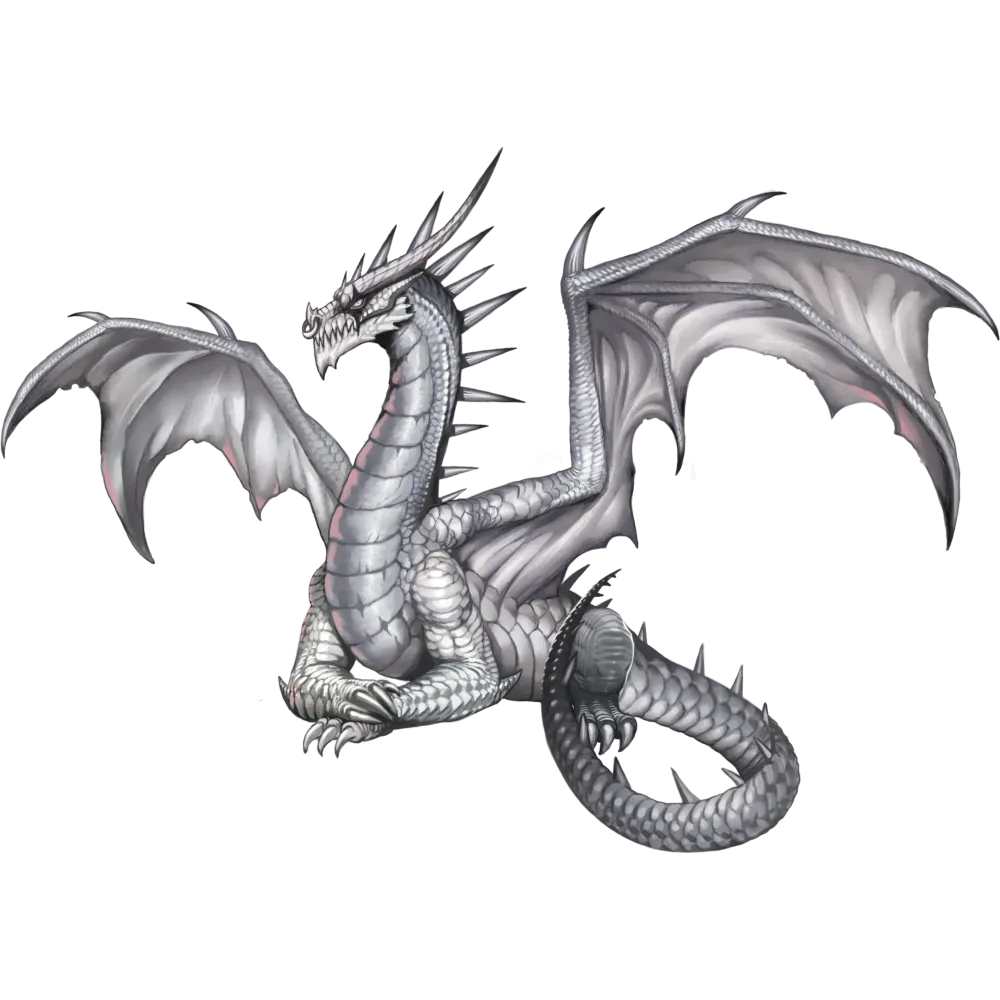
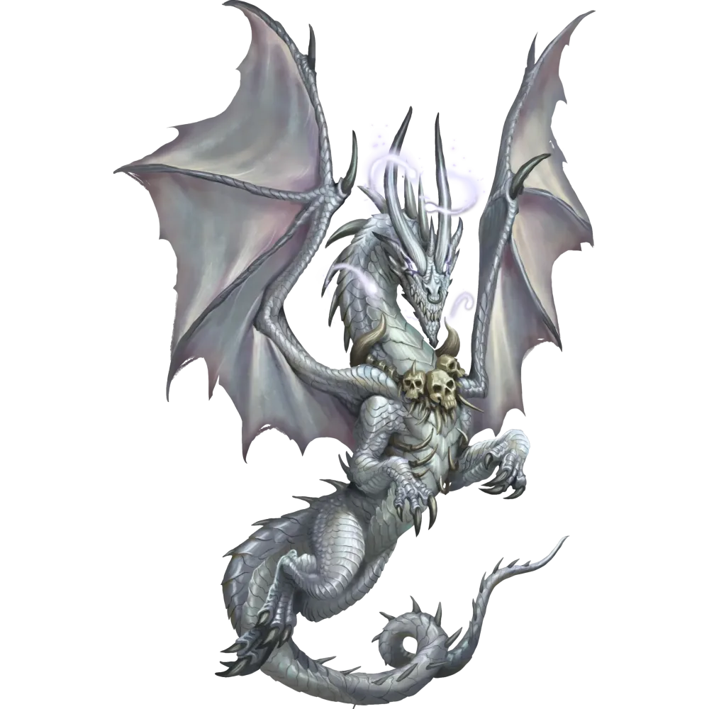

各年龄段数据卡
关于过去、现在与未来的幻象无休无止地袭向厄运龙，令它们片刻不得喘息，也因此往往养成了暴躁阴郁、孤僻厌世的性情。它们永远无法确证自己所见景象的真伪，也分不清眼前浮现的究竟是即将降临的灾祸，还是早在数百年前便已落幕的往事。这种煎熬不断消磨着厄运龙的心智，使许多同族一步步深陷抑郁或焦虑的泥沼。而那些学会了如何与幻象共存的厄运龙，也通常会隐居在偏远隔绝之地，避免与他人建立羁绊，唯恐无意间窥见对方的悲惨宿命。 为了排解幻象带来的煎熬，许多厄运龙热衷于收集各类神秘学器物，试图借此理清自身预视诅咒的脉络。水晶球、占卜牌、星象图与通灵板等玄秘占卜器具堆满了厄运龙的巢穴，有时往往只用过一次便被弃置一旁。厄运龙同样囤积着一架又一架的典籍，内容大多是预言汇编或是剖析各类预言的论著。由于这类著作大多自相矛盾、彼此抵牾，厄运龙很难从自己的藏书阁中获得多少真正有用的信息；但这并不会阻止它们继续搜寻下一件器物或下一本古籍――它们始终坚信，下一次发现终将为自己带来苦苦寻觅的突破。 万物终焉之暗被称为“万物终焉之暗”（简称“终焉之暗”）的这头厄运龙，是近来声名较盛的一头同族，身边还聚拢了一小批同样鼓吹末日论的追随者――不过这支小小的厄运龙团体无论走到哪里都根本不受欢迎。这头自诩为“末日先知”的巨龙声称自己接获了文明毁灭的幻象，但即便是对那些宣称笃信他的追随者，他也始终对幻象的具体细节守口如瓶。而每当“终焉之暗”听闻某地发生了与自己幻象片段相吻合的事件，便会火速赶往当地，向一切愿意倾听警告的人宣讲即将降临的末日。迄今为止，他的预言尚无一例应验；但他依然牢牢掌控着追随者们的关注与狂热虔诚――毕竟，他总有一天……会蒙对一次吧。 厄运龙还酷爱用精巧繁复的机关与陷阱来加固自己的巢穴。许多厄运龙会修筑通往致命死胡同的厅堂与回廊，指望闯入者不是被魔法能量轰成碎片，就是跌入布满尖刺的深坑底部丧命。这些陷阱通常隐藏在暗门之后，而暗门本身又必须解开复杂的谜题方能开启。厄运龙喜欢自认为能够比对手多算几步，并深信唯有真正能够洞悉未来之人，才配平安穿行于它们的巢穴。除了机关陷阱之外，厄运龙还常常蓄养泥怪、小型动物或无心智生物，专门负责清理折戟沉沙的冒险者遗骸。 当厄运龙确实收编了一批爪牙时，往往也会将这些个体当作随时可弃的消耗品，以免对生命短暂的凡物产生感情。它们通常不会当面下达指令，而是更偏爱使用神秘通讯手段，或是借助小动物与构装体传递口信。这类命令往往言简意赅，因为厄运龙理所当然地期望爪牙们清楚自己的本分并高效完成差事。遗憾的是，并非所有爪牙都能立刻把差事办得完美无缺；这有时便会导致它们的厄运龙雇主派它们去干徒劳无功的蠢事，或是踏上九死一生的险途――最终要么害死它们，要么阴差阳错地把它们逼进一场地狱般的特训，唯有拼尽全力方能活命。厄运龙通常很快就能招到替补人手，除非因害死太多部下而背上残酷冷血的恶名。颇具讽刺意味的是，这样的厄运龙几乎从未预见过自己会落得众叛亲离的下场。 占验意象与谶语厄运龙接获的预言吉光片羽，往往表现为晦涩难解的断句与支离破碎的画面。这类幻象的常见例子包括：一轮鲜红烈日自金山背后冉冉升起、一面由十余个国家的旗帜拼缝而成的鼓胀船帆、一株凝满寒霜的大树破开城市街道拔地而起，以及一群飞鸟在空中聚拢成一张女子的面庞。而厄运龙耳畔可能听到的谶语则诸如：“蓝白双剑露锋芒，时辰一到断存亡”、“千年流沙漫王庭，抚平老王惧与惊”，以及“白昼雄狮威风丧，暗影孤狼足下羊”。 千劫先知卡赞尼德隆厄运龙因幻象不可靠而声名狼藉，这倒也并非空穴来风。它们看到的究竟是历史上真实发生过的往事，还是存在着微妙偏差的虚影？它们究竟是真正预言了未来，还是仅仅窥见了时间长河中一朵永远不会化为现实的涟漪？了解厄运龙的学者向来懂得先提出这类疑问，而不会对厄运龙的幻象照单全收；但对于那些这一次幻象偏偏精准无比的厄运龙而言，这种质疑自然令人倍感挫败。双方行事各有缘由，谁也算不上全无道理。 若以此衡量，太古龙卡赞尼德隆恐怕是世间最常感到挫败恼火的巨龙之一。由于预言天生变幻无常，加上由此引发的沉重焦虑，寻常厄运龙很难在迈向太古龙的漫漫长路上顺遂成长。少数个体之所以能够撑过来，靠的是干脆彻底无视一切幻象，通过冥想修得平静安宁的心境，直至忘却那股向旁人倾诉幻象、阻止灾厄降临的强迫冲动。 卡赞尼德隆却无需研习这类静心法门，因为与其他厄运龙相比，她的幻象自始至终都精准得惊人――早在她还年幼得多、远未接近如今太古龙之境的岁月里便已如此。 卡赞尼德隆面对的困扰只有一个，但对她而言不幸的是，这桩困扰比寻常厄运龙的烦恼更加令人抓狂：尽管她的幻象远比普通厄运龙准确得多――倘若采信她本人的说法，只要排除她亲自插手干预的变数，她的幻象甚至百发百中――但幻象向她揭示的那些过去、现在与未来的真相，却无一例外全都离奇荒诞得令人难以置信。 那位经营着数十家孤儿院、备受敬仰的当地慈善家与社区栋梁？卡赞尼德隆在幻象中看到他正与一名高阶巫妖达成交易，准备将所有可怜孩童的灵魂吞噬殆尽。王都盛大的仲夏庆典？一场反常的骤然冰封与暴风雪即将袭来，令数千民众活活冻毙街头。某头义体龙是不是把珍贵工具忘在自己宝库的哪个角落了？不，其实是一个来自异维度的外星生物无意间在宝库旁撕开了传送门，一时兴起顺手捞走了工具，随后又蹦跳着回到了自己的维度。 厄运龙的宝库除了往往保有大批占卜器具之外，厄运龙还倾向于收集具有特殊象征意义、或是与重大历史事件息息相关的物品。这些藏品可能是巨龙成功化解某场浩劫后留下的纪念战利品，也可能是厄运龙为了凭吊逝者而从覆灭城邦或消亡文明中搜集来的最后遗物。一旦对这些藏品施展读物术之类的通灵感应效应，往往能从中感受到极其强烈的情感烙印。 卡赞尼德隆接连看到的这些以及无数其他预言，乍听之下全都荒诞不经、毫无可信度，最终却无一例外应验成真。然而，由于她每次都是向不同当事人逐一转告预言，未必会针对同一个人反复接获幻象，因此她始终未能建立起“预言精准”的名声。她每一次都说对了，却偏偏没有一个人相信她。随着年岁渐长、力量日增，卡赞尼德隆对自身处境愈发恼火无奈，直到最终彻底对旁人死心，决定亲自出手解决一切。 只要她能凭一己之力摆平所有危机，旁人信与不信又有什么要紧？对其他巨龙与凡人双双放弃幻想之后，她反倒得以独立行事、提前布防。唯一的难题在于：她的幻象虽然比普通厄运龙精准得多，但想要直接阻止它们发生却也同样难如登天。 于是，卡赞尼德隆得出了一个全新的结论：既然直接扭转幻象中所见的事件如此艰难，那么规避幻象中凄惨厄运的最佳方式，便是默认自己亲眼所见的画面终将按字面原样上演，同时紧贴着幻象发生的前一刻或后一瞬做好万全布置，从而抵消最惨烈的后果。 自我应验的预言正如许多为了改写天命而苦苦追逐预言的人一样，厄运龙极易沦为亲手缔造自身宿命的推手。举例而言，倘若一头厄运龙在幻象中瞥见了日后将杀死自己的凶手面容，它便可能开始四处追猎此人，企图先下手为强将其铲除。作为先发制人的报复，这头巨龙或许会杀害那人的全家；结果这一暴行反而彻底激怒了那名未来的屠龙者，促使其将替亲人复仇奉为毕生唯一使命，最终历练得足够强大，亲手坐实了这头厄运龙的败亡宿命！ 正因如此，当她在幻象中看见一头德高望重的巨龙遭到相伴五百载的挚爱伴侣背叛、被一箭屠龙箭射杀之时，卡赞尼德隆施展魔法在千钧一发之际将受害者悄然卷走，并在原地投射出一道死亡幻影，将自己幻象中的每一处细节分毫不差地重现出来。如此一来，幻象得到了应验，而那头受人敬重的巨龙也平安活了下来。 最终，卡赞尼德隆意识到单凭自己一龙之力终究无法包办所有事；于是她开始招募一批爪牙与盟友――这些人之所以听命行事，纯粹是因为“她要求他们这么做”，而不再取决于他们是否相信她那些近乎天方夜谭的离奇幻象。这样一来，她只需直接下令让他们在何时前往何地、执行何种行动，而无需费口舌解释自己为何作此安排。在过去数十年间，这套运作模式成效斐然，助她化解了多场灭顶灾祸。历经筹划、受挫与重新调整的层层摸索，卡赞尼德隆完美展示了一头聪慧的巨龙如何巧妙绕开自身束缚，将天赋力量发挥出最大优势。 改写未来并非厄运龙的每一次努力都注定以失败告终。尤其是随着年岁渐长、阅历愈深，厄运龙或许能够学会剖析纷至沓来的未来幻象，分辨出哪些真正极有可能发生，哪些又只是注定不会成真的虚妄泡影。当然，它们必须时刻铭记：有时最荒诞离奇的可能反倒是真切现实，而最滴水不漏、最令人信服的假象却恰恰暗藏谬误。假以时日，厄运龙便能磨砺出甄别可信预言的眼力，并据此抉择恰当的应对之策。在厄运龙眼中，未来绝非铁板一块；只要行动足够审慎而精准，厄运龙便能避开凄惨宿命，真正改写未来。 暗中之光：万物终焉的真相 Light in the Darkness: Truth at the End of Things为了更深入地了解厄运龙，我动身去寻访受雇于那头远古厄运龙的末日宣讲者们――顺带一提，他们主子有着一个冗长得过分的名号：“万物终焉之暗”。没错，这整串词加起来才是那头巨龙的全名。亲爱的读者，我相信你一定也会同意，这名字念起来实在是太拗口了。 追查那些末日宣讲者的踪迹简直易如反掌。其他调查往往需要耗费数周乃至数月时间，从蛛丝马迹中抽丝剥茧地推敲地点；可这一回线索实在太过招摇。他们正在一座紧挨着活火山山脚的小镇里声嘶力竭、大张旗鼓地宣扬末日降临。果不其然，他们绘声绘色地描述了一幅终末幻象：先是头顶那座火山轰然喷发、吞没整座小镇，继而释放出一头沉眠于地底的神兽――据称那是昔日被始祖巨龙吞噬的所谓“原初诸尊”之一――而这头苏醒的神兽随后便会将整个世界彻底毁灭。 我假装对这些骇人听闻的末日预言兴致盎然，上前向他们打听更多细节；结果那群末日宣讲者顿时滔滔不绝地讲个没完……没完……又没完。这场所谓的末日浩劫细节详尽到了极点，而且他们自己显然也对此倾注了满腔狂热真情。耐心听了好半晌、确认不会显得太过刻意之后，我才顺水推舟地打听起“万物终焉之暗”，并套出了更多有关他们首领的情报，甚至成功约到了一次当面会晤。见面之后，那头远古厄运龙上气不接下气地向我兜售着与他信徒如出一辙的末日悲观论调。好在我总算拨开满耳废话，成功摸清了不少关于厄运龙能力的有趣细节。哦，当然了――到最后，那座火山根本就没有喷发。 ――永光贤者卡利赞德雷克斯 |
 厄运龙  厄运龙 |